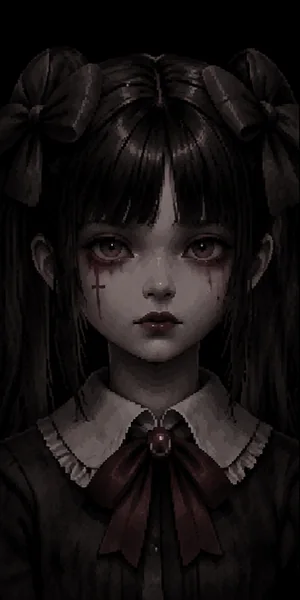

Meeto Games представляет — готический шутер
 — готический шутер
— готический шутер
Готический шутер от первого лица про борьбу за жизнь. Игрушечный мир, пластиковые солдатики, фарфоровые балерины и волны врагов.
Об игре
«Погост» — быстрый шутер от первого лица на аренах. Волны врагов идут одна за другой, за каждый уровень даётся опыт и карточка улучшения, а между забегами заработанное тратится на постоянную прокачку.
Мир собран из игрушек, но история за ним серьёзная: она про борьбу за жизнь. Маленький Мито и девочка-готка Мина сражаются каждый за своё, и арены — место, где идёт эта борьба.
Игра в разработке на Unity. На скриншотах ранняя сборка.
Волны и карточки
Переживи волны врагов, получай уровни и выбирай карточку улучшения.
Быстрое движение
Тройной прыжок, рывок с неуязвимостью и удар о землю с ударной волной.
Оружие с отдачей
Отдача, ход затвора и настоящие гильзы, которые звенят о пол.
Игрушки ломаются
С пластиковых солдатиков слетают каски и руки, а обломки остаются на арене.
Свой саундтрек
Свет и интерфейс бьют в такт музыке.
Прокачка между забегами
Трать заработанное на постоянные улучшения и возвращайся сильнее.
Мина



Мина — одна из двух главных героев.
Скриншоты
Игра в разработке
До выхода скриншоты и детали могут измениться. А пока можно поиграть в мои браузерные игры.
Браузерные игры